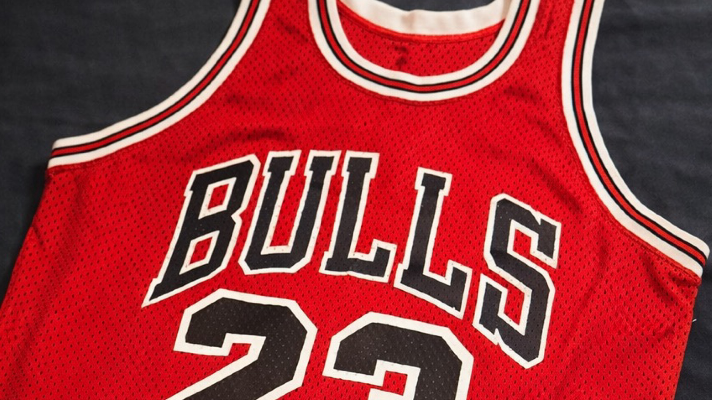
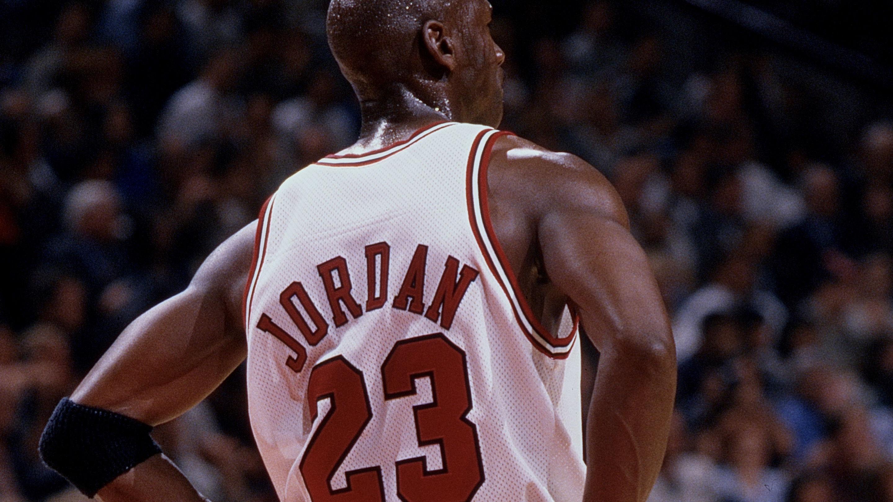

The Nuances of the Jordan Jersey
Sand-Knit tagging, uniform inventory practices, and carryover stock during the late 1980s.
Observations, discoveries, and commentary drawn from ongoing archival research within the Michael Jordan Archive.
Research Articles
Sand-Knit tagging, uniform inventory practices, and carryover stock during the late 1980s.

A case study in research and image context surrounding an early 1980s jersey.

A season-by-season look at the number of jerseys worn by Michael Jordan during his Chicago Bulls career.
Acknowledgements: The author would like to thank the collectors and researchers who have shared information, imagery, and artifacts that helped inform the ongoing documentation of Michael Jordan’s game-worn jerseys.